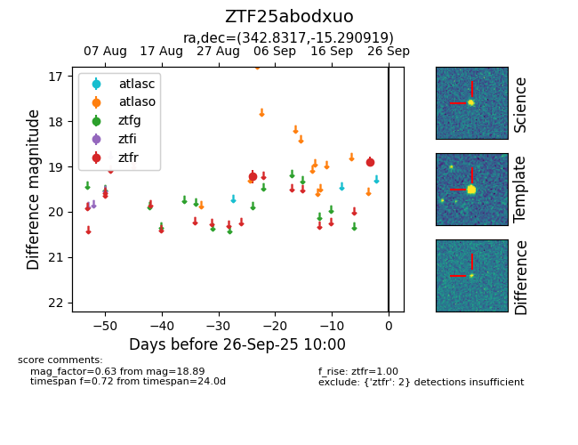

FINK: ZTF25abodxuo
Lasair: ZTF25abodxuo
ALeRCE: ZTF25abodxuo
ZTF25abodxuo (ztf,fink)
equatorial (ra, dec) = (342.8317,-15.29092)
galactic (l, b) = (49.7713,-59.71310)

last ztfr=18.89
2 ztfr detections